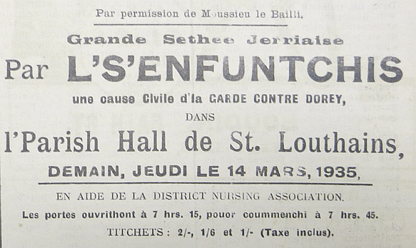

|
Chutte sémaine jé veurt vos pâler sérieusement. J'espéthe qué touos mes lecteurs et lectrices savent qué cèrtains mêssieurs ont composé un thiâtre en jèrriais et qu'des r'présentations ont 'té organisées dêjà à deux' trais bords. Nou m'a dit tch'il' ont idée d'aller dans les difféthentes pâraisses et d'même tout l'monde dé Jèrri éthont la chance d'y'aller châtchun dans lus distrit. Eh bein, j'vos promets qu'ch'est d'tchi rare. La Pie en est toute extasiée et êmèrveillie. Jé l's ai sieus d'en par ichin à La Rocque, à St. Jean, à St. Ou et à Gouôray, et j'ai idée d'les siéthe partout. J'vos garantis qu'ch'est raide bouon. Sans doute, étant vielle jèrriaise et emportée pour lé jèrriais comme j'sis, il est bein naturel qu'j'es'sais s prête à loûser un concèrt jèrriais d'la maniéthe. Mais, j'vos asseûthe que autrément j'n'ai autcheune connexion auve la production d'chu thiâtre ni d'châres dans la compangnie; jé n'sis pas même pathente à autcheune pèrsonne y prenant part. Pour vos montrer tch'i' n'y'a dgéthe dé préjudice dé man côté. Du dgiâtre si j'ithais à touos ches fichus concèrts tch'ont lieu dé temps a autre, prépathés par ch'tî-chîn et ch'tî-là et quâsiment tréjous en angliais. Nou mé d'mandait n'y'a pas longtemps dans ieune des pâraisses d'amont d'aller à eune séthée donnée par eune Missis Watteau Allaine ou tchiquechose dé même, oui' d'la chant'tie, des r'citations, etc... J'rêponnit à ch't îndividu tchi m'avais passé l'complyiment qu'i' n'tait qu'un achocre dé penser qu'un ouaisé respectablye comme mé allait à d'ité. J'lî fit bein à comprendre qué toute chutte heurléthie d'chant'tie n'est pon pour des vièrs jèrriais. J'lî dit qué la p'tite Teurtgoule, la hardelle Poudrette et les d'mouaîselles Grimmaches né m'întérêssaient pon du tout bieau tch'i' s'saient supposées d'être dé bouonnes chanterêsses, et qu'la dans'sie pour dé mé est un tas d'niolîn et d'bêtîn. M'est avis qu'les gens d'acheteu n'savent pus tchi faithe pour lus amuser. Pûtôt qu'd'aller vaie des drinnettes faithe des simmagrues, l'ver les dgithets et lus crauler l'driéthe dans tchique salle pârouaissiale ou au Pavillon j'aimthais mus r'garder les p'tits bichots sauticotter sus la C'munne du Bouôlay ou sus l'Gardîn d'Olivet. Et pis ch't angliaîchîn-là m'emm'luque. Jé l'dêteste comme nou dêtestethait bein l'odeur d'êpu et l'goût d'puches et d'frummions. Eh bein, l's Enfuntchis sont raide bouons et si j'ai un avis à donner ès cheins tchi n'y'ont pas 'couo 'té ch'est - allouos-en ès Enfuntchis sans manque, dites-lé à touos vos anmîns et emmenez-y tout l'vaisinné. S'i' y'en a parmi vous tch'ont l's esprits bas j'vos asseûthe qué v'là tchi sèrvitha d'médecinne; j'pathie qu'ou roubliêthez étou touos vos ahans pour des londgeurs après. Pour dé mé j'sis couôsue d'romatisses des deux côtés, ayant ri tant à châque èrprésentation. et j'n'en ai pon 'couo ieu man tchoeu content, j'm'y'en r'vais la préchaine fais! J'ai eune seule pliainte à faithe et ch'est contre les dames Grouvillaises tchi prennent part dans l'tchiâtre. Pourtchi qu'i' pâlent en angliais entre ieux en attendant lus tou à monter sus la strade? Est-che pour montrer tch'i' savent chutte dêtestablye langue? J'voudrais lus rassouv'nîn qué ch'n'est pon du tout exemplaithe et d'tâchi d'èrmiédgi ch'la les préchaines fais. Justément deux'trais patholes au sujet des pèrsonnages. Y'a l'Président d'la Cour, lé Sieur Luce, tchi pathaît si majestueux, sage et rêvilli et touos ses parchonnièrs les Juges et l'Prochuleux tchi lus montrent si supérieurs, comme il' en sont justifiés. Lé Greffyi est un homme tchi n'pathaît pon aver frait ès yièrs. I' r'garde d'un' yi pèrchant l's uns et l's autres et n'dit mot mais porobablyément n'en pense pas mains. L's avocats, les Sieurs Malzard et Bèrtram, êdutchis jusqu'ès dents pour l'occasion, sont typiques des hommes dé louai - eune èrsembliance parfaite. I' vos halent les vèrs du nez ès témoins comme un êracheux d'dents à san mêtchi. Lé pliaignant, pouorre médgian, empouaisonné par de l'arsénîn d'pliomb, est véthitablyément au pliâtre et atou sa minne dé cas rôti nou n'sait la minnute qué l'tchoeu lî craqu'sa et tch'i' laîs'sa couorre eune alanchie d'vômîn partout la strade. I' mênage dé s'comporter grace à la médecinne qué sa bouonnefemme lî vèrse avau l'gôsyi dé temps en temps. Harold Brée a la minne au tcheur sus la strade mais faut l'vaie souper après tch'il a gangni sa cause pour réaliser tch'i' n'est pon rêellement mouothant! Lé d'fandant - nou s'apèrchait tch'il a les druges, à forche d'entendre chutte racachie d'témoins et l's avocats l'dêchiter, mais ayant pèrdu sa cause i' paie d'bouon tchoeu et sans hânion'nie. Ph'lippe Cabot comme docteu a la minne comme s'i' vivait d'êcopi et d'thée chambard, et l'Inspecteu, li, eh bein, i' méthite d'aver la position quand l'Etchèrbot du Colorado veindra. Les deux fèrmièrs sont raide bouons. Lé grand Tom Dutot en partitchulli, auve eune corpothance comme un rouai et eune vouaie comme eune ôrage. Ch'est un bieau lard, qué Tom Dutot! La vendrêsse et la chinnerêsse dé lédgeumes et la paissonniéthe font lus partie à mèrvelle. La qualification nécessaithe pour eune femme dans l'marchi, sans doute, est de posséder eune langue d'aspi - dé pouver flianneter sans aheuctéthie et d'être eune gâzette dans san vaisinné! J'en ai p't-être dit assez, mais touos l's autres qué jé n'mentionne pas font tous lus possiblye pour la Cause ou contre (comme l'affaithe s'adonne) et néthitent les houpades (la rithie) sans cêsse d'la part d'l'audience. Quand au domestique jé crai qu'jé l'sens acouo! I' semblye qu'i' sort dé d'ssus la maie et quand i' monte dans la boête nou s'immaginne tch'il apporte avec li l'èrtunfîn d'êtablye et qu'i' sent à feumi et à êpu. Georges Rénouard fut né pour lé tchiâtre mais il a mantchi sa vocation! Acouo eune fais, n'mantchiz pon à aller vaie l's Enfuntchis. Ch'est lé d'vé dé toute pèrsonne jèrriais en Jèrri d'y'aller qué ch'sait villais - d'la Colomb'thie ou du Rouoge Bouillon, ou campangnards - des geôniéthes du Mont Mado, d'la brüéthe des Pliatons ou du tchu des Landes. Les composeurs et organisateurs, Mêssieurs Bèrtram et Malzard, et tout lus troupé né peuvent être trop loûsés pour lus mangnifique production et i' méthitent les r'mèrcîments d'l'Ile entchiéthe pour lé travas tch'il' ont pour lé vièr jèrriais. Espéthons tch'il' en compos'sont acouo à l'avenîn et souhaitons jouaie et un grand succès à toute ls compangnie. Félicitations bein sîncéthes dé la part de Marie La Pie. Marie La Pie Les Chroniques de Jersey 2/2/1935 |


|
Viyiz étout: